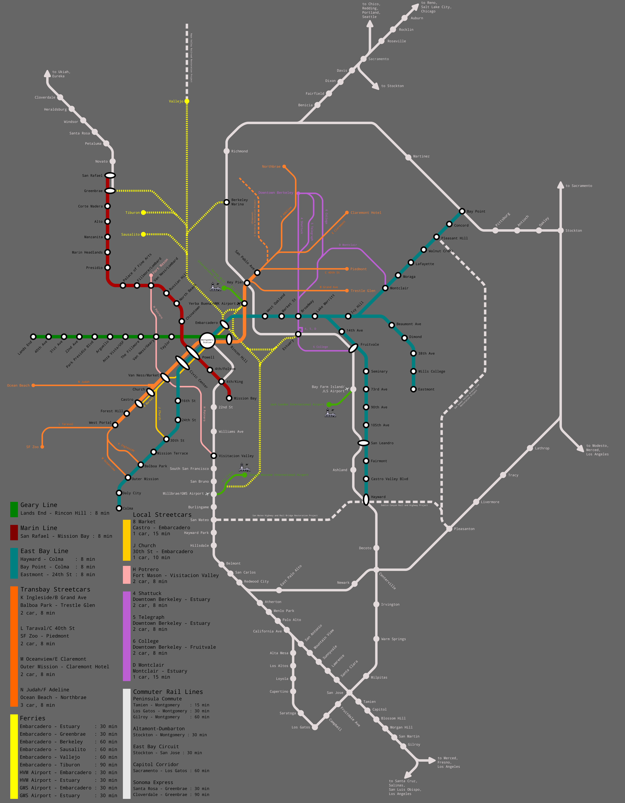
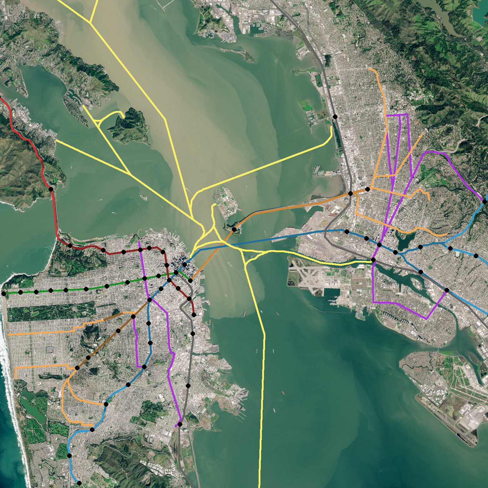

|
 |
There is a to-scale version of this map here to provide more context for where everything is. |
{kind=link}
{kind=link}
Lore
What if the Key System had survived, and the subsequent transit order accomodated it?
This concept has bounced around my head for a long time, and I've made many maps about it, but this is my best.
This universe diverges from ours in 1946.
The navy gives back Treasure Island after the war for use as an auxiliary airport in addition to the Oakland and San Francisco airport sites we know today.
The rail line diverging at California Ave and running to Los Gatos by way of what would become Cupertino is preserved, though inactive for a time, and Silicon Valley's boom causes it to in the late 90s be reactivated for passenger service.
Key is not acquired by National City Lines, but instead municipalized and, in 1956, merged with the SFMTA to form a joint bay-spanning transit authority managing the streetcars and local buses of both San Francisco and the East Bay.
Ultimately, the A Downtown Oakland, B Geary, B Trestle Glen, C Geary-California, C Piedmont, E Claremont, F South Berkeley, H Potrero, 4 Shattuck, 5 Telegraph, and 6 College survive the streetcar purges of the 1950s in addition to the familiar J, K, L, M, and N lines.
This transit is not altogether adequate, especially on the slow and overcrowded A Downtown Oakland and B/C Geary lines. And, since the Northwestern Pacific Interurbans and Southern Pacific ferries still go bust, Marin lacks quality transit service. So, as in our timeline, a project to build a newfangled automated metro system with a transbay tube is undertaken.
This system was conceived of differently than BART, designed for a denser metro area and to be a proper subway rather than an S-Bahn-like commuter rail, so it stops more frequently.
The route through San Francisco to Daly City follows more or less the same right of way, as does the transbay tube. Instead of going overground, the line remains underground through West Oakland, following 12th street and the A line's path through downtown. There is no need to service North Oakland or Berkeley, already replete with transbay streetcars faster than BART is today.
To serve east Contra Costa County, a metro line runs up Park Blvd, first underground and then on a viaduct, to Montclair. From there, it follows the Sacramento Northern right of way the entire way to Bay Point, with new tunnels and infrastructure. It was constructed originally to Concord, as the real-life BART line was.
The other two lines fan out through East Oakland, one down the median of I-580, the other down International (then East 14th) to Hayward, making much more frequent stops than BART, causing the areas it serves to densify substantially.
The Marin line follows one of the old Northwestern Pacific Interurban routes (through a new tunnel and with new viaducts) to San Rafael, where it transfers to longer distance commuter rail. It was built on the lower deck of the Golden Gate Bridge (as BART was supposed to before it was sabotaged). Rather than running down Geary, as the Marin BART line was supposed to, it follows the Central Subway's proposed/partially built route, reaching Downtown-ish SF through touristy but high-density neighborhoods. It serves more tourists than all the other lines combined.
As for the Geary line, it was built to increase the capacity and speed of the streetcar lines it replaced, but its construction was simple.
Similar to real-life BART, its construction occurred in stages but was mostly complete (save a few extensions) by 1978.
And, like BART, the construction of the Market Street Subway was an impetus to turn the higher ridership SF streetcars into a subway-surface model. As part of this, the Transbay Terminal was demolished and the viaducts repurposed to connect the Transbay streetcars to the subway, so that the various routes could be interlined, as the KT was before the Central Subway. The platforms were built low-floor, to accomodate low floor streetcars, which they transitioned to in the 1980s, as the new subway came into use.
Loma-Prieta, as in our universe, prompted the reintroduction of commuter ferry service, including the Creek Ferry route to Downtown Oakland.
In 1990, the state of California put under the control of a single statewide agency all its distance passenger rail service, and began the process of upgrading and electrifying much of the service as a big public works project. The peninsula corridor, having been til now slowly deteriorating, was the first electrified, and was substantially upgraded. Many of the other Bay Area commuter lines were altered or had stations moved to mesh better with the local transit.
As part of this, service was restored to Eureka and the Eel River tracks repaired, and new lines are being created and old rights of way reactivated regularly, as the map shows.
In 2004, the line to Concord was extended to Bay Point for transfer purposes, and the D Montclair line (dusting off a very old proposal by the Key System) was activated along a previously unused, now upgraded version of the old Sacramento Northern right of way in Oakland. Similarly, the H was extended to Visitacion Valley.
The tri-valley boom, later than in our timeline due to the denser development patterns around Oakland, has sparked demand for the reactivation of the Southern Pacific corridor through the San Ramon Valley. It's due to finish by 2024.
The San Mateo Bridge, previously car-only but due for an upgrade, is getting rails also! It's due to finish by 2029.